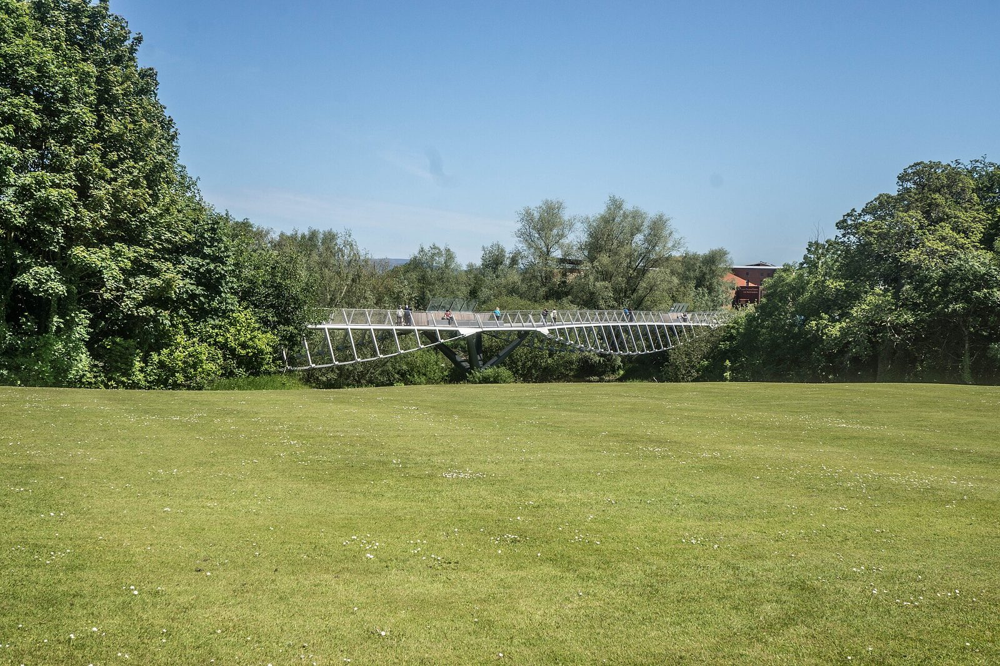

Prospective researchers
Join us
We work with postdocs, PhD students and visiting researchers who want their research to change how software is actually built and assured — not only how it is described in papers.
What we look for
Curiosity about real systems, and the stubbornness to make things work on them.
If you are interested in automated verification and testing, the intersection of artificial intelligence and software engineering, or requirements engineering, and you want to do research with a measurable effect on practice, this is a good place to work.
Our projects are typically run with industrial partners, so members get access to real systems, real engineers and real constraints. That access is what makes the research credible; it also means we value people who can work through the messiness that comes with it.
The group sits inside Lero, the Research Ireland Centre for Software, which spans several Irish universities and gives members a much wider research community than a single group would. Members also collaborate with the Nanda Lab in Ottawa.
Positions
Open roles
Applying
How to apply
There is no form. A short, specific email is worth far more than a long generic one.
-
Send a CV
Including your publication record, if you have one, and the names of two referees.
-
Write a statement of intent
One page is enough. Tell us which problem you want to work on and why, and how it connects to what the group already does. Referring to a specific paper of ours is more convincing than describing your interests in general terms.
-
Email both to Prof. Briand
lionel.briand@lero.ie. Please put the position you are applying for in the subject line.

The University of Limerick campus, on the banks of the Shannon.